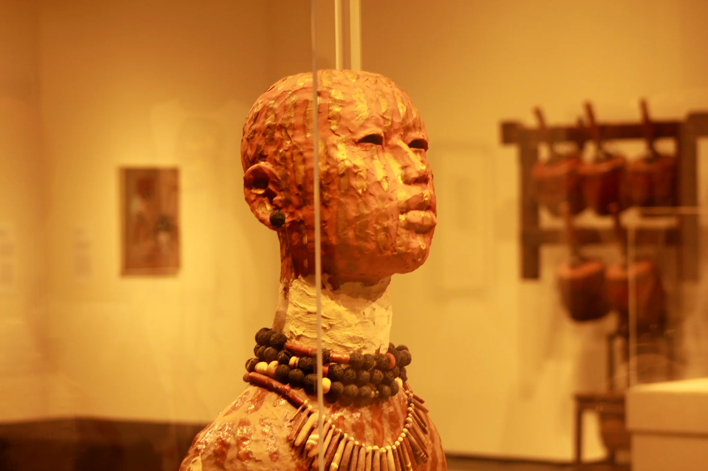

Through my lens
What caught my eye.
A photographer offers another person a moment they might otherwise have missed. Here are the ones that held me: macro worlds, coastlines, cities, and the geometry of places.

The complete collection
Pick what catches your eye.
0 photographs